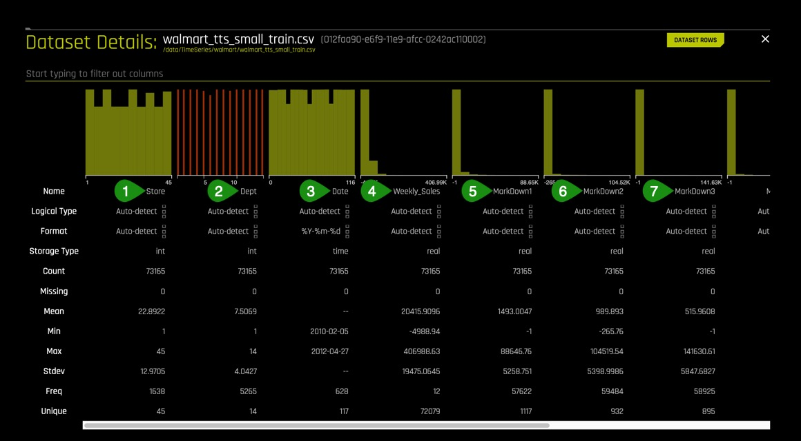
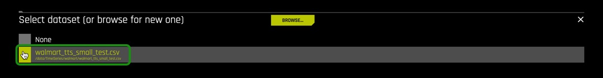
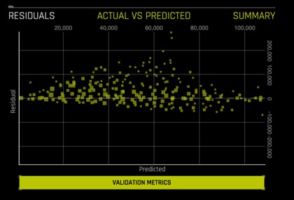
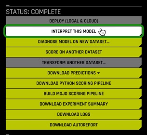
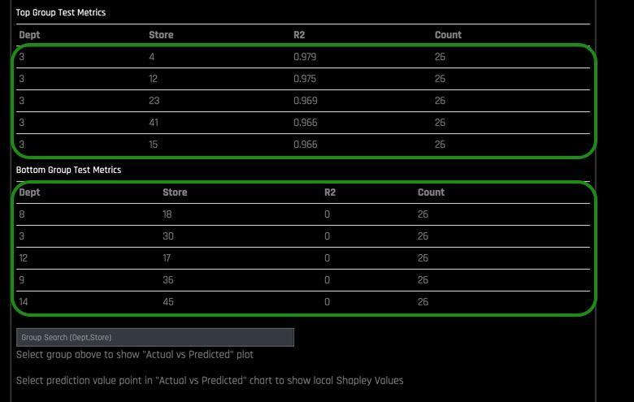

Time-series forecasting is one of the most common and important tasks in business analytics. The goal of time-series forecasting is to forecast the future values of that series using historical data. Time-series forecasting uses models to predict future values based on previously observed values, also known as extrapolation.
Driverless AI has its own recipes for time-series forecasting that combines advanced time-series analysis and H2O's own Kaggle Grand Masters' time-series recipes. In this tutorial we will walk through the process of creating a time series experiment and compare the results to a pre-loaded time series experiment based on the same dataset just higher experiment settings.
Note: We recommend that you go over the entire tutorial first to review all the concepts, that way, once you start the experiment, you will be more familiar with the content.
- You will need the following to be able to do this tutorial:
- Basic knowledge of Machine Learning and Statistics
- A Driverless AI environment
- Basic knowledge of Driverless AI or doing the Automatic Machine Learning Intro tutorial.
You can get more information about getting a Driverless AI environment or trial from the following:
- A Two Hour Test Drive Session
- H2O Driverless AI License Key
- H2O Driverless AI Environment and Product Tour
If you are not familiar with Driverless AI please review and do this tutorial:
About the Dataset
This dataset contains information about a global retail store. It includes historical data for 45 of its stores located in different regions of the United States from 02-05-2010 to 11-01-2012. Each numbered store contains a number of departments, the stores specific markdowns(promotional) events they have throughout the year which typically happen before prominent holidays such as the Superbowl, Labor Day, Thanksgiving and Christmas. Additional information included are the weekly sales, dates of those sale, the fuel price in the region, consumer price index and unemployment rate. The dataset was used in a Kaggle in 2014 competition with the goal of helping this retail store forecast sales of their stores.
[1] Our training dataset is a synthesis of the csv data sources provided for the Kaggle Store Sales Forecasting competition. The three datasets were train.csv, stores.csv and features.csv. The train.csv has the store number, department, date, weekly sales and whether or not that day was a holiday. The stores.csv had the types of stores and their size while the features.csv which had additional demographic information about the specific region the store was located in.
The training dataset in this tutorial contains 73,165 rows and a total of 11 features (columns) and is about 5 MB. The test dataset contains about 16,000 rows and a total of 11 features (columns) and is about 1 MB.
Datasets Overview
If you are using Aquarium as your environment then the following labs, Test Drive and Introduction to Driverless AI, will have this tutorials training and test subsets of the Retail Store Forecasting dataset preloaded for you. The datasets will be located on Datasets Overview page. You will also see two extra data sets, which you can ignore for now as they are used for another tutorial. To learn more about how to add the two datasets from the DAI file system then see Appendix A: Add the Datasets.
1. Verify that both dataset are on the Datasets Overview, your screen should look similar to the page below:

2. Click on the walmart_tts_small_train.csv file, then on Details.

3. Let's take a quick look at the columns of the training set:

Things to Note:
- Store - the store number
- Dept - the department number
- Date - the week
- Weekly_Sales - sales for the given department in the given store, what we are trying to predict
MarkDown1-5 - anonymized data related to promotional markdowns that this global retail store is running. MarkDown data is only available after Nov 2011, and is not available for all stores all the time. Any missing value is marked with an NA. - MarkDown1
- MarkDown2
- MarkDown3
4. Continue scrolling the current page to see more columns (image is not included)
- MarkDown4
- MarkDown5
- IsHoliday - whether the week is a holiday week
- sample_weight
5. Return to the Datasets Page
Launch Experiment
As mentioned on the objectives, this tutorial includes a pre-ran experiment that has been linked to the Projects Workspace. Projects is a feature introduced in DAI 1.7.0 and it is a workspace for managing datasets and experiments related to a specific business problem or use case. The Projects page allows for easy comparisons of performance and results and identify the best solution for your problem. See Deeper Dive and Resources at the end of this task for additional information on the Projects Workspace.
2. Select Projects , an image similar to the one below will appear:

Things to Note:
- Projects: Projects menu option
- Pre-created Project which includes:
- Name : Project name (Time Series Tutorial)
- Description: Optional (N/A)
- Train Datasets: Number of train datasets (1)
- Valid Datasets: Number of validation datasets (0)
- Test Datasets: Number of test datasets (1)
- Experiments: Number of experiments (1)
- Additional options for the created project:
- Open
- Rename
- Delete
- +New Project: Option to create a new project
3. Open the Time Series Tutorial, an image similar to the one below will appear:

The project "Time Series Tutorial" has the pre-ran time series experiment linked, this includes:
All the datasets used in the pre-ran experiment
Completed Experiment
4. Select New Experiment , located on the top-right corner of the page.

5. Select Not Now on the First time Driverless AI, Click Yes to get a tour!. A similar image should appear, then select Click to select or import a dataset...

6. Select the walmart_tts_small_train.csv dataset:

Name your experiment: Time Series Forecasting
7. A similar experiment page will appear:

On task 2, we will explore and update the Time Series Experiment Settings.
References
[1] Walmart Recruiting - Stores Sales Forecasting
Deeper Dive and Resources
In this task, we are going to update the experiment settings. Unlike the other experiments covered in this tutorial series, the experiment settings layout for time series are slightly different, and there is an additional component, time. The following experiment settings will be adjusted to run through the mechanics of running a time series experiment
Experiment settings to be updated:
- Test Dataset
- Target Column
- Weight Column
- Time Column
- Time Groups
- Forecast Horizon
- Scorer
- Accuracy
- Time
- Interpretability
Below are high level descriptions of the DAI settings that will be updated for this time series tutorial. To learn more about each scorer see the Deeper Dive and Resources at the end of this task.
Test Dataset
The test dataset is used for testing the modeling pipeline and creating test predictions. The test set is never used during training of the modeling pipeline. (Results are the same whether a test set is provided or not.) If a test dataset is provided, then test set predictions will be available at the end of the experiment. Adding the test dataset will also hint Driverless AI of the expected horizon and gap. Driverless AI measures the length of the Test dataset as well as the timing of when it commences (compared to the end of the training data) to decide on these values.
Weight Column
Column that indicates the observation weight (a.k.a. sample or row weight), if applicable. This column must be numeric with values >= 0. Rows with higher weights have higher importance. The weight affects model training through a weighted loss function and affects model scoring through weighted metrics. The weight column is not used when making test set predictions, but a weight column (if specified) is used when computing the test score during training.
Time Column
Column that provides a time order (time stamps for observations), if applicable. Can improve model performance and model validation accuracy for problems where the target values are auto-correlated with respect to the ordering (per time-series group).
The values in this column must be a datetime format understood by pandas.to_datetime(), like "2017-11-29 00:30:35" or "2017/11/29", or integer values. If [AUTO] is selected, all string columns are tested for potential date/datetime content and considered as potential time columns. If a time column is found, feature engineering and model validation will respect the causality of time. If [OFF] is selected, no time order is used for modeling and data may be shuffled randomly (any potential temporal causality will be ignored).
Time Groups
Time Groups are categorical columns in the data that can significantly help predict the target variable in time series problems. Examples of time groups would be a combination of customer and product (assuming each has its own history), where you might want to see if a customer wants to buy one of your specific products. You can look into the direct time series and view how many times a customer has bought that particular product in the past time points. The two time groups (customer and product) or multiple time series can be blended together in DAI.
Scorers
A scorer is a function that takes actual and predicted values for a dataset and returns a number. Looking at this single number is the most common way to estimate the generalization performance of a predictive model on unseen data by comparing the model's predictions on the dataset with its actual values. For a given scorer, Driverless AI optimizes the pipeline to end up with the best possible score for this scorer. We highly suggest experimenting with different scorers and to study their impact on the resulting models[1].
The scores available in Driverless AI are:
- GINI : Gini Coefficient
- MAE : Mean Absolute Error
- MAPE : Mean Absolute Percentage Error
- MER : Median Error Rate
- MSE : Mean Squared Error
- R2 : R Squared
- RMSE : Root Mean Square Error
- RMSLE : Root Mean Squared Logarithmic Error
- RMSPE : Root Mean Square Percentage Error
- SMAPE : Symmetric Mean Absolute Percentage Error
Forecast Horizon
Amount of time periods to predict
It is important to note that the following settings are essential for the development of a good model. For best model results, it is recommended to use the default settings given by Driverless AI. Please keep in mind that using an environment like Test Drive will limit you to a two-hour lab session. The default settings can lead to a run time of more than two hours.
Accuracy
Accuracy in time series forecasting determines the number of time-based validation splits. It also controls whether sampling will be used, the types of main machine learning models as well as the type of features included.
Time
It controls how long (as in how many iterations) Driverless AI will spend on trying to find:
- The best time series features
- Best models
- Best hyper parameters for these models
Interpretability
Controls the complexity of the models and features allowed within the experiments (e.g. higher interpretability will generally block complicated features and models).
Now we will update the experiment settings for our retail sales dataset.

1. Select Test Dataset, then select walmart_tts_small_test.csv

2. To start the time series experiment you need to select Time Column, then select Date.
Note: The date will be defined in the time field, when this is done then Time Series will be enabled, then the Time Series Settings will appear on the top-right side of the page.

3. Select Weight Column, then select sample_weight

4. Select Target Column, then select Weekly_Sales

Under Time Series Settings located on the top-right side:
5. Select Time Groups Columns, then select the columns below, followed by: Done.
- Store
- Dept
- Date

6. Select Forecast Horizon, make sure the Forecast Horizon is 26 weeks and the gap between Train/Test Period is 0 weeks.

7. Under Experiment Settings, click on Scorer,

then select R2 as the scorer:

8. Under Experiment Settings, update Accuracy, Time and Interpretability to values below, then click on Launch Experiment:
Note:: These settings were selected to conform to the Aquarium/Test Drive Environment. The goal is to walk-through the mechanics of setting up a time series experiment. Having an interpretability of 10 means that we want a simple model that will be easy to interpret.
- Accuracy : 1
- Time : 1
- Interpretability : 10

9. Now review your experiment settings page and make sure it looks similar to the image below, after, select Launch Experiment.

References
Deeper Dive and Resources
Time Series
Time series is a collection of observations generated sequentially through time. In time series, data is ordered with respect to time, and it is expected that successive observations are dependent, an example is ocean tides[1].
Characteristics of time series data:
- Natural temporal ordering
- Natural one-way ordering of time
- Order of time
- Stationary: do not have trend or seasonal effects
- Non-stationary: contain trends and seasonality
- Observations close together in time will be more closely related than that data further apart
- Predictions for a given period are made on the natural one-way order rather than future events
- Time Series is different from cross-section studies where a group of people from a particular point of time are studied, this does not follow a natural order
- Time series is different to data collected with time differences due to geographical locations
The plots below are examples of non-stationary time series where the time series dataset shows seasonality and trends.

Time Series Analysis
Time series analysis helps answer questions such as what is the causal effect on a variable Y of a change in X overtime? The goal is to understand the dataset to build mathematical models that provide plausible interpretations of the problem domain. In time-series analysis you are trying to determine the components of the dataset in terms of seasonal patterns, trends, relation to external factors. Models are developed to best capture or describe an observed time series in order to understand the underlying causes[1].
Time Series Forecasting
Time-series forecasting is one of the most common and important tasks in business analytics. The goal of time-series forecasting is to forecast the future values of that series using historical data. Time-series forecasting uses models to predict future values based on previously observed values, also known as extrapolation.
Here is a short list of the many real-world applications of time-series:
- Sales
- Weather
- Stock market
- Energy demand
Time Series Forecasting in DAI
Driverless AI has its own recipes for time-series forecasting that combines advanced time-series analysis and H2O's own Kaggle Grand Masters' time-series recipes.
These are the key features/recipes that make the automation possible:
- Automatic handling of time groups (e.g., different stores and departments)
- Robust time-series validation
- Accounts for gaps and forecast horizon
- Uses past information only (i.e., no data leakage)
- Time-series-specific feature engineering recipes
- Date features like day of week, day of month, etc.
- AutoRegressive features, like optimal lag and lag-features interaction
- Different types of exponentially weighted moving averages
- Aggregation of past information (different time groups and time intervals)
- Target transformations and differentiation
- Integration with existing feature engineering functions (recipes and optimization)
- Automatic pipeline generation
DAI Modeling Approach
Driverless AI uses GBMs, GLMs and neural networks with a focus on time-series-specific feature engineering. The feature engineering includes:
- Autoregressive elements: creating lag variables
- Aggregated features on lagged variables: moving averages, exponential smoothing descriptive statistics, correlations
- Date-specific features: week number, day of week, month, year
- Target transformations: Integration/Differentiation, univariate transforms (like logs, square roots). This approach is combined with AutoDL features as part of the genetic algorithm. The selection is still based on validation accuracy. In other words, the same transformations/genes apply; plus there are new transformations that come from time series. Some transformations (like target encoding) are deactivated.
- When running a time-series experiment, Driverless AI builds multiple models by rolling the validation window back in time (and potentially using less and less training data).
Gap and Horizon
The guiding principle for properly modeling a time series forecasting problem is to use the historical data in the model training dataset such that it mimics the data/information environment at scoring time (i.e. deployed predictions). Specifically, you want to partition the training set to account for:
- The information available to the model when making predictions
- The length of predictions to make.
Given a training dataset, gap and prediction length are parameters that determine how to split the training dataset into training samples and validation samples.
Gap: is the amount of missing time bins between the end of a training set and the start of test set (with regards to time). For example:
- Assume there are daily data with days 1/1/2019, 2/1/2019, 3/1/2019, 4/1/2019 in train. There are 4 days in total for training .
- In addition the test data will start from 6/1/2019. There is only 1 day in the test data.
- The previous day (5/1/2019) does not belong to the train data. It is a day that cannot be used for training (i.e because information from that day may not be available at scoring time). This day cannot be used to derive information (such as historical lags) for the test data either.
- Here the time bin (or time unit) is 1 day. This is the time interval that separates the different samples/rows in the data.
- In summary there are 4 time bins/units for the train data and 1 time bin/unit for the test data plus the Gap.
- In order to estimate the Gap between the end of the train data and the beginning of the test data, the following formula is applied.
- Gap = min(time bin test) - max(time bin train) - 1.
in this case min(time bin test) is 6 (or 6/1/2019). This is the earliest (and only) day in the test data max(time bin train) is 4 (or 4/1/2019). This is the latest (or the most recent) day in the train data. - Thefore the GAP is 1 time bin (or 1 day in this case), because Gap = 6 - 4 - 1 or Gap = 1

Quite often, it is not possible to have the most recent data available when applying a model (or it is costly to update the data table too often); hence models need to be built accounting for a "future gap". For example if it takes a week to update a certain data table, ideally we would like to predict "7 days ahead" with the data as it is "today"; hence a gap of 7 days would be sensible. Not specifying a gap and predicting 7 days ahead with the data as it is 7 days ahead is unrealistic (and cannot happen as we update the data on a weekly basis in this example).
Similarly, gap can be used for those who want to forecast further in advance. For example, users want to know what will happen in 7 days in the future, they will set the gap to 7 days.
Horizon (or prediction length) is the period that the test data spans for (for example, one day, one week, etc.). In other words it is the future period that the model can make predictions for.

The periodicity of updating the data may require model predictions to account for significant time in the future. In an ideal world where data can be updated very quickly, predictions can always be made having the most recent data available. In this scenario there is no need for a model to be able to predict cases that are well into the future, but rather focus on maximizing its ability to predict short term. However this is not always the case, and a model needs to be able to make predictions that span deep into the future because it may be too costly to make predictions every single day after the data gets updated.
In addition, each future data point is not the same. For example, predicting tomorrow with today's data is easier than predicting 2 days ahead with today's data. Hence specifying the horizon can facilitate building models that optimize prediction accuracy for these future time intervals.
Groups
Time-series has multiple groups, which combines multiple time-series together. Groups are categorical columns in the data that can significantly help predict the target variable in time series problems. For example, one may need to predict sales, given information about stores and products or just stores or just products. Being able to identify that the combination of store and products can lead to very different sales is key for predicting the target variable, as a big store or a popular product will have higher sales than a small store and/or with unpopular products.
For example, if we don't know that the store is available in the data, and we try to see the distribution of sales along time (with all stores mixed together), it may look like the chart below:
Note the format Date(Time), Group(Groups) and Target(Sales) plus other independent features. This is the ideal format the data needs to be in or order for DAI Time-Series to work.
Lag
The primary generated time series features are lag features, which are a variable's past values. At a given sample with time stamp t, features at some time difference T(lag) in the past are considered. For example, if the sales today are 300, and sales of yesterday are 250, then the lag of one day for sales is 250. Lags can be created on any feature as well as on the target.

Note: The top section is the original dataset with training data, the gap and the period we want to predict is also known as the test.
- The training data expands a certain number of time units. The time units can be anything, it can be years, months, weeks, seconds or just an integer value that increments over time. When the training data stops, then the test data period begins, these are the periods we want to make predictions for.
- Another item to note is the gap, which DAI accounts for. The gap is when you don't have the most recent information available when you want to make predictions. For instance, when we want to make a prediction for tomorrow but we only have data from yesterday because our dataset was not updated today. This means that the only data available to make the predictions are all the data up to yesterday.
The second section of the image is what happens behind the scenes in DAI to optimize for the top dataset. Here a window which includes test and gap are taken and DAI tries to replicate them internally. We go to the most recent part of the training data and form a validation dataset. This new validation dataset will be of the same size as the test dataset with an artificially added gap so that it matches the original window. Then DAI uses any remaining periods to generate periods to form a training dataset.
As previously noted, the training dataset is appropriately split such that the amount of validation data samples equals that of the testing dataset samples. If we want to determine valid lags, we must consider what happens when we will evaluate our model on the testing dataset. Essentially, the minimum lag size must be greater than the gap size.
Aside from the minimum useable lag, Driverless AI attempts to discover predictive lag sizes based on auto-correlation."Lagging" variables are important in time series because knowing what happened in different time periods in the past can greatly facilitate predictions for the future.
Validation Schemas
DAI uses the most recent training data as the validation data. Data can be validated by the following validation schemas:
- Time split
- Single Time
- Multi window
- Rolling Window with adjusting traninging size
- Rolling window with constant training size
- Random K intervals
Below is an example of a time series dataset, we will use it to showcase some of the validation schemas:

Time Split
The number of time splits is highly dependent on the value of accuracy set on the experiment page. If the accuracy is set low when setting up the experiment, then DAI selects a single time split which in turn will only generate one model for validation. A single time split takes the most recent data and makes it the validation data. The validation data will be the same size as the forecast horizon and it will include a gap if there was a gap.
Single Time Split

When accuracy is set to higher values, then the number of time splits increases and DAI does a more thorough cross validation and we start generating multiple folds with a rolling window. A rolling window means that we keep shifting the validation set to the past and we use again any data before that for a training dataset, this process will be done multiple times. For example when Accuracy is set to 10, then the number of time splits increases to 6, this means there will be more rolling windows. The number of rolling windows is a factor of accuracy.
Multi window

Time Series Feature Engineering
The following are the types of time series families that DAI creates:
Date Decomposition extracts:
- Year
- Quarter
- Month
- Day
- Day of Year
- Week
- Week day
- Hour
- Minute
- Second
- Holidays: Includes Holidays based on calendars from different countries

Lags : If you wanted to predict target we can use the values of yesterday(lag1), two days ago(lag2), three days ago(lag3) as features.

Windows: Another family of features are windows, windows are combinations of different lags. For example we can take an average or a moving average of three lags together such as lag1, lag2 and lag3. It is good to be able to see the difference between a standard average and a weighted moving average where the highest observation has the highest weight than the other one, the idea being that what happened most recently will have a bigger impact on the target compared to events that happened further away in the past. We can also do this by applying exponential smoothing, where we apply an exponential decay of .95 (hyper parameter a), where we give the most recent observation higher importance than the one that is further in the past.
Windows can be also used to obtain other descriptive statistics such as:
- Max
- Min
- Median
- Standard Deviation
- Kurtosis
- Skewness

Interactions : Interactions are interactions between lag values, these are also features that are created in order to deseasonalize the data to focus more on the differences between the data points than then trend. For example, calculating the difference between lag1 and lag2 ( Diff1 = lag1 - lag2) or looking proportionally how the target is changing in the past (Div1= lag1/lag2).

Trends: Trends or correlation is used as another feature where we take the lag values and plot them against time and observe the trend created(R2 value). Linear regression can also be used where the coefficient or slope is taken and then it is used as a feature to solve the trend/tendency of the time series to go up or down.

Target transformations: DAI also does target transformation so that instead of modeling on the target(label), we can model on the square root of the target. For example when using RMSLE as the scorer, DAI converts the target to the log of the target.
Other transformations include:
Square Root
Log

References
[1] Applied Time Series and Box-Jenkins Models by Walter Vandaele page 3-5
Deeper Dive and Resources
At the end of the experiment, a similar page will appear:

Things to Note:
- Status: Complete
- Deploy To Cloud
- Interpret this Model - Launches Model Interpretation on time series data for multiple groups
- Diagnose Model on New Dataset... - allows you to view model performance for multiple scorers based on existing model and dataset
- Score on another Dataset - After you generate a model, you can use that model to make predictions on another dataset
- Transform Another Dataset.. - Not available for Time Series experiments
- Download Predictions
- Training Predictions - In csv format, available if a validation set was NOT provided
- Test Set Predictions - In csv format, available if a validation set was provided
- Download Python Scoring Pipeline - A standalone Python scoring pipeline for H2O Driverless AI
- Build MOJO Scoring Pipeline - A standalone Model Object, Optimized scoring pipeline
- Download Experiment Summary - An experiment summary is available for each completed experiment as zip file
- Download Logs
- Download Autoreport
- Iteration Data - Validation
- Validation Score - 0.7642
- Model Type: XGBoostGBM
- Variable Importance
- Summary:
- Summary: See image below:

- Actual vs Predicted: See image below:

- Residuals : See image below:

Deeper Dive and Resources
1. On the Status: Complete Options: select Interpret this Model

2. While the model is being interpreted an image similar to the one below will appear:

3. Once the "MLI Experiment is Finished" page comes up, select Yes, and an image similar to the one below will appear:


Things to Note:
- MLI TS HELP
- Help Panel : This panel describes how to read and use the Time Series MLI page.
- Hide Panel : To hide Help Panel, click on Hide Panel
- Add Panel : add a new MLI Time Series panel. This allows you to compare different groups in the same model and also provides the flexibility to do a "side-by-side" comparison between different models.
- MLI TS Docs : A link to the "Machine Learning Interpretability with Driverless AI" booklet.
- Time Series Model
- Download Logs : Download a zip file of the logs that were generated during this interpretation
- Show Summary : Button provides details about the experiment settings that were used
- Download Group Metrics : retrieve the averages of each group's scorer, as well as each group's sample size.
- Input Box : this box lists the ID of the current model. The ID value can be changed to view other models. This can be done by adding a panel and searching in the input box for the new ID.
- Time Series Plot : If the test set includes actual results, then a time series plot will be displayed
- Groups Test Metrics
- Top Group Test Metrics : Top group matrix based on the scorer that was used in the experiment
- Bottom Group Test Metrics : Bottom group matrix based on the scorer that was used in the experiment
- Group Search : Entry field for selecting the groups to view. A graph of Actual vs Predicted values for the group will appear. This graph can be downloaded to your local machine.
4. Read the MLI TS Help panel to get a better idea on how to run the MLI on Time Series data for multiple groups, then click on Hide Help Panel.
5. Under Time Series Model click Show Summary, an image similar to the one below will appear:

Note: This is a summary of the experiment settings, it comes in handy when you want to compare the MLI settings/results to the MLI settings/results of another model for dataset side by side.
6. Select Hide Summary
7. Hover over the Forecast Horizon of the R2 Time Series Plot.
Note: R2 or the coefficient of determination is mainly used to analyze how well a variable can predict another one. In other words, it is a statistical measure of how well the regression line approximates the real values. It represents the strength of the relationship between two time series or variables.The values observed in that range are the percentage of change of variable x that can be explained by changes in variable y. The values of R2 range between 0 and 1, where 1 indicates that the values in this range can be entirely explained by pre-existing values.

8. Under Top Groups Test Metrics and Bottom Group Test Metrics, which Department(s) and Store(s) had the top R2 values? How about the Department(s) and Store(s) with the lowest R2?
Note: Columns is the number of unique cases in that time series composed of department and store appear of test data.

9. On the Group Search box:
- Enter the following Dept and Store numbers:
3,12 - (Dept, Store) options will appear below the Group Search box, select
3,12 - A plot similar to the one below will appear with the actual and predicted values plotted for Department 3, Store 12:

- Hover over to the Forecast Horizon and note the Actual plot in yellow and the Predicted plot in white. While there hover over the peak point of the plot then compare the actual vs predicted values generated by the model for store
3,12. - This is the option to download the plot
- From the Actual vs Predicted chart find the peak point and double click on it, a local Shapley value will appear right below the plot:

At exactly the peak, it is clear that the lag of 52 weeks is the most important feature that drives this prediction that high.
- While at the Actual vs Predicted chart find a point somewhere at the plateau and double click on it, a local Shapley value will appear right below the plot:

- Explore other Departments and Stores Actual vs Predicted charts by clearing the "3, 12" value and entering another Department and Store in the Group Search box.
10. Go to the top of the page and:
- Select Add Panel
- On the new panel, click on the Select a model interpretation, then select the Time Series Model named :
Time Series Forecasting - Experiment 2: dahecaga. This will bring in the pre-ran experiment's MLI results. Click on Show Summary for both experiments to compare experiment settings:
Note: the DAI Experiment Runtime for both experiments. The pre-ran experiment took more than seven hours to run.

- For the pre-ran experiment, enter Department 3, Store 12 and find the peak point as well as the Shapley values associated with the peak point. Compare the values of the experiment you ran to the pre-ran experiment:

When looking at both MLI results, we can see that for the pre-ran experiment the Shapley value that had the most importance for the peak value was 33 EWMA Lag or the Exponentially Weighted Moving Average, which calculates the exponentially moving average of a target or feature lag, compared to the lag of 52 weeks for the new experiment. The feature that we see in the pre-ran experiment is a weighted moving average of what happened in various weeks over a course of 2 years; this is a more complex feature than the 52 weeks lag, and that is expected because we built a more complex model from the pre-ran experiment. Although the 52 weeks lag would help make the prediction for a peak value more accurate, our more complex model is trained to be able to predict any point in time, compared to our simple model which would make predictions based on the 1 year lag. Note that the 52 lag is indeed, one of the important variables in the complex model, but is not the most important one.
- Find the shapley values for a point on the plateau for the pre-ran experiment and compare the values between the pre-ran experiment and the new experiment MLI results.
Deeper Dive and Resources
Now we are going to take a look at the pre-ran Time-Series experiment and compare the results of the new experiment through the Projects Workspace:
1. Click on H2O.ai located at the top-left side of the MLI page, this will take you back to the Datasets Overview page.
2. Select Projects, then click on the Time Series Tutorial Project.
3. On the experiments section of the Projects page click on the pre-ran time-series experiment with name Time Series Forecasting - Experiment 2. The following image should appear:

This experiment was run in another environment with similar parameters except for the following settings:
- Accuracy : 10
- Time : 6
- Interpretability : 6
The above settings are recommended settings for timeseries problems, notice the high accuracy, time and lower interpretability compared to the settings from task 2. Time-series experiments are very special cases as a result it is highly encouraged that the experiments are run with the default settings given by Driverless AI.
For a time-series experiment an Accuracy of 10 is highly encouraged because it forces many time splits (time splits are critical for stability and prevents overfitting) and allows for multiple window validation. If you must run a time-series experiment with anything lower than a 10, the lowest recommended setting for accuracy is a 5.
Time is more flexible and can be ran with the DAI default value, or the lowest time value being 3. Regarding interpretability, use default results, for good results use interpretability values of either 5 or 6, anything less than 5 will tend to overfit.
Summary of suggested settings for Time-Series Experiments:
Accuracy | 10 | 5 |
Time | Default | 3 |
Interpretability | Default | 5 |
One important thing to note is why we changed the Scorer that DAI suggested initially from RMSE to R2 . Even though DAI suggested RMSE as the scorer, we updated the scorer to R2 because for this particular dataset it's easier to generate similar results across different experiments since we can expect less fluctuation and more stability in terms of the results.
4. Click on < located at the top-left side of the Experiments page, this will take you back to the Project Time Series Tutorial page.
5. On the experiments section of the Projects page:
- Click on the pre-ran time-series experiment with name Time Series Forecasting - Experiment 2 and the name of the time-series experiment you ran for task 2
- Then select Compare 2 Items

6. A page with your experiment results and the results for the pre-ran experiment will show. An image similar to the one below will appear:


Things to Note:
- The experiment with the lower settings had less features scored compared to the pre-ran experiment. This means that DAI tested 45 features from which only 7 were found useful compared to the pre-ran experiment which tested 2700 features and found 18 features useful for feature engineering. At higher settings, DAI does a more thorough evaluation.
- The lower settings experiment had an R2 value of .95146 compared to .95852 for the pre-ran experiment.
- The variables under variable importance for the low settings are very simple lags compared to the pre-ran experiment that has very sophisticated variables.
- On the Actual vs Predicted plots, the pre-ran experiment shows the points less dispersed compared to the low settings experiment. This translates to higher accuracy on the predictions.
8. We have two models, a complex model, and a simple model. The complex model performed better than the simple model, but yielded some features that are not very easy to interpret, thus making the model less interpretable. On the other hand, we have a simple model that produced intuitive features but had a lower score than the complex model. Choosing the "best" or most accurate model depends on the specific application, and one has to decide if they want:
- The most accurate or best possible model
Or
- The most interpretable model
This decision needs to be made according to each particular case.
9. You have a finished model that you are satisfied with, what is next? What if you wanted to make predictions outside of the 26 week forecast horizon?
Some of the options are:
- Retrain entire pipeline with the most recent data
- Build a new model with most recent data
- Use recent model using DAI's Test Augmentation
Learn more about DAI's Test Augmentation by visiting H2O's documentation site.
Deeper Dive and Resources
Add the Datasets
Import H2O's training and test subsets of the Retail Store Forecasting dataset to the Datasets Overview Page.
1. Select +Add Dataset(or Drag and Drop) then click on File System

2. Type the following path into the search bar: "/data/TimeSeries/walmart/"
3. Select the following sets from the list:
walmart_tts_small_test.csv
walmart_tts_small_train.csv

4. Click to Import Selection
5. Verify that both dataset were added to the Datasets Overview, your screen should look similar to the page below:
Check out Driverss AI next tutorial [Natural Language Processing Tutorial - Sentiment Analysis]()
Where you will learn:
- How to launch a sentiment analysis experirement
- Sentiment Analysis Experiment settings
- NLP Concepts
- Driverless Ai NLP Recipe
- and more....